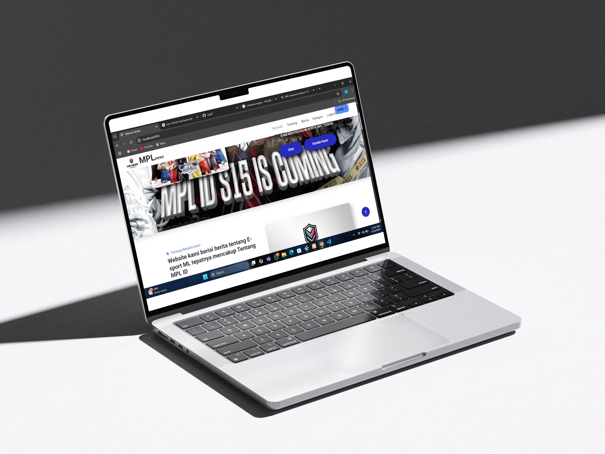
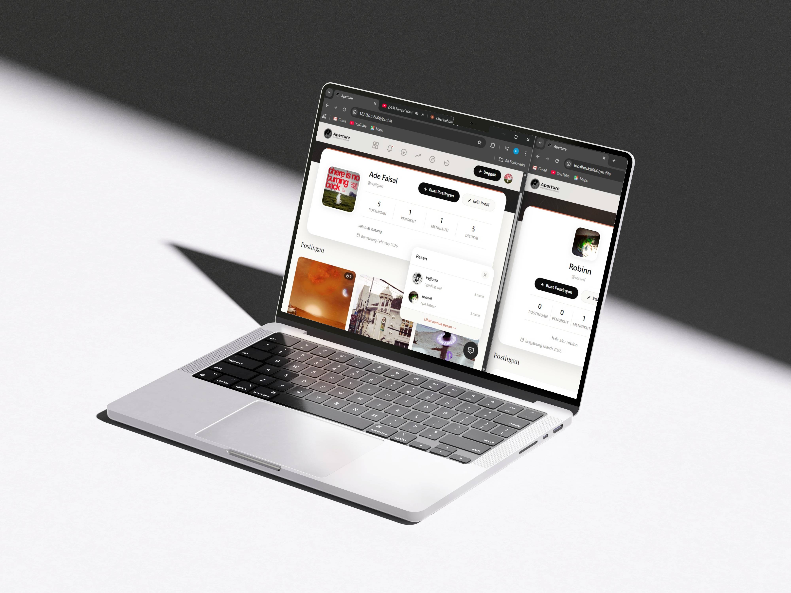

MPL-News
Website artikel dengan desain yang bersih dan navigasi yang mudah untuk memberikan pengalaman membaca yang nyaman bagi pengguna.
Saya seorang UI/UX Designer, Frontend Developer, Graphic Designer, Photographer, dan Video Editor.

Website artikel dengan desain yang bersih dan navigasi yang mudah untuk memberikan pengalaman membaca yang nyaman bagi pengguna.

Website media sosial dengan desain yang modern dan fitur interaktif untuk memudahkan pengguna berbagi foto, video, dan cerita mereka dengan komunitas.
Website sistem informasi laboratorium dan manajemen data untuk memudahkan pengelolaan inventaris, jadwal, dan laporan kegiatan laboratorium dengan antarmuka yang intuitif.